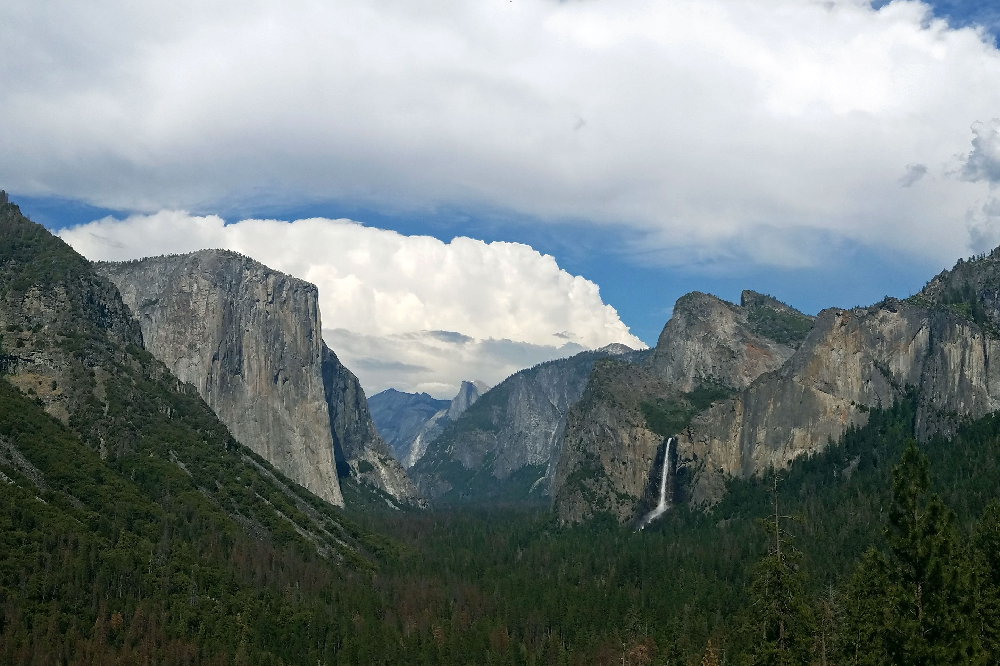
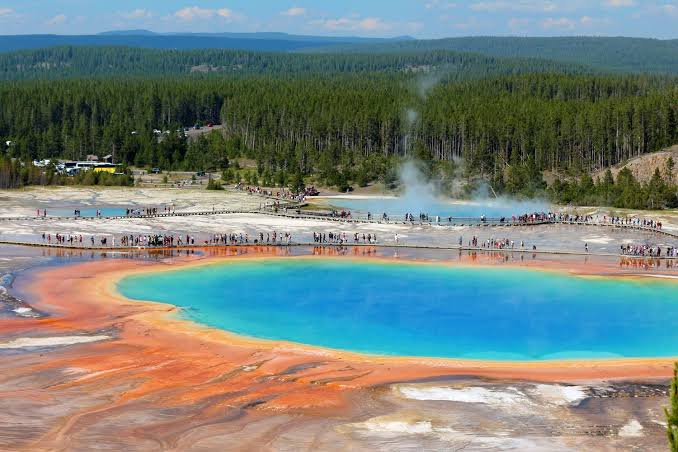
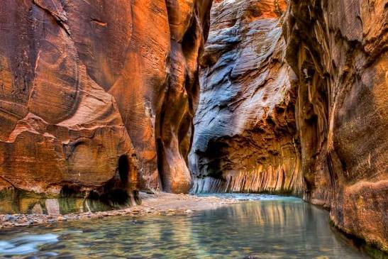
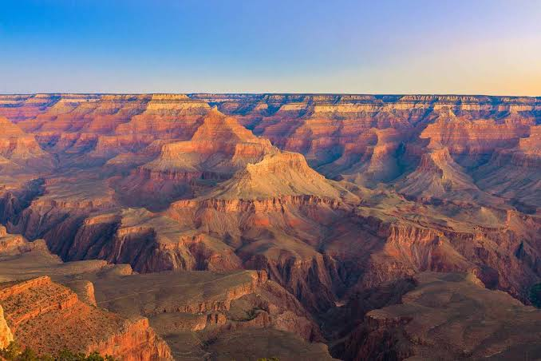
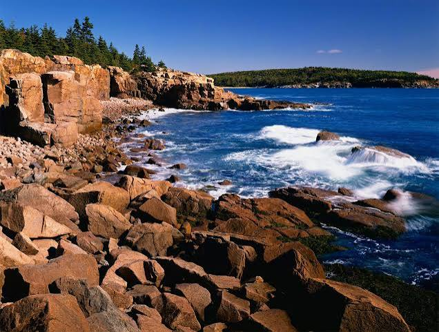
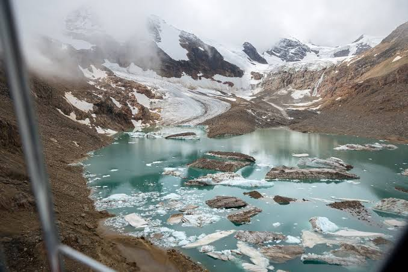
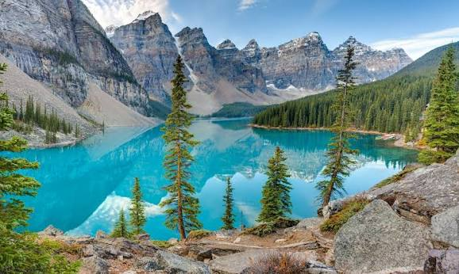
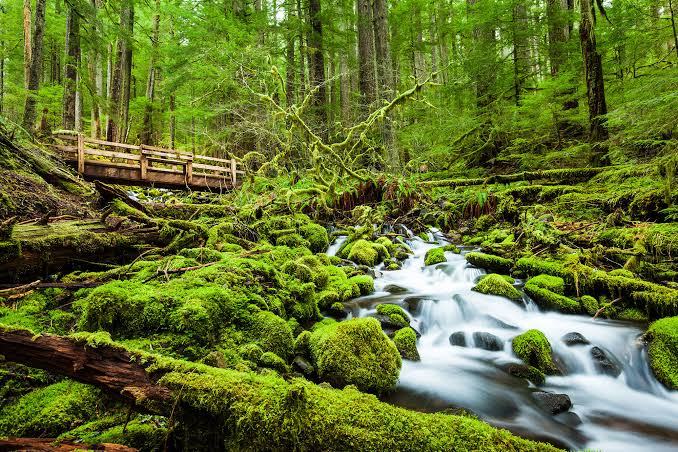
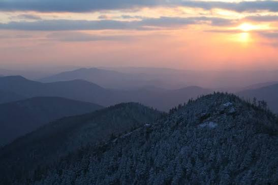

Welcome to our visual journey through some of the most breathtaking national parks across the globe. National parks preserve pristine natural landscapes, unique ecosystems, and rich cultural histories for generations to come. From sweeping desert valleys to lush rainforests, these protected areas offer an invaluable escape into nature.
Each image below showcases a distinct environment, emphasizing the diverse geography and wildlife found within these sanctuaries. As you explore the gallery, consider the importance of conservation efforts required to keep these magnificent landscapes untamed and beautiful.








